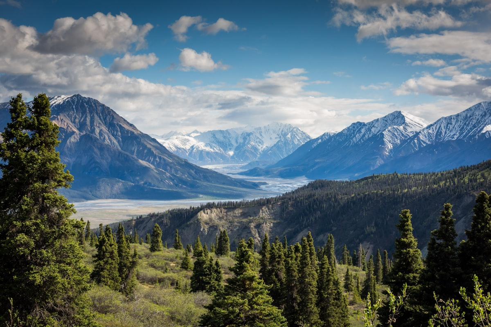

Make room for nature in cities.
Urban Forest brings together residents, volunteers, organizations and local partners to create lasting green infrastructure.

The science, community, and stewardship model.
We operate as a transparent non-profit hub connecting city master planners, certified arborists, regional native nurseries, and local volunteers.


1. Ecological Diagnosis
Every planting location undergoes deep soil testing, solar modeling, and utility checks to select resilient native species.
2. Community Ownership
We train local volunteer Tree Captains, fostering long-term neighborhood pride and hands-on environmental education.
3. Guaranteed 3-Year Care
Weekly hydration, organic mulch donuts, and biometric growth audits ensure 92%+ of saplings mature into towering canopy trees.
The 5 steps of tree planting and maintenance.
Science-backed care guarantees healthy root architecture and lasting tree vigor.
Soil & Site Diagnostics
Mapping urban heat islands, certifying 811 utility clearance, and analyzing soil pH and drainage.
Wide Basin Pit & Flare Placement
Digging a saucer-shaped pit 2-3x wider than root ball. Placing root flare 1-2 inches above grade.
Native Backfilling & Settling
Backfilling with unamended native soil and light tamping with water to eliminate all air pockets.
Mulch Donut & Slow Drip Bag
Applying 3 inches of aged organic mulch kept 3 inches from trunk bark, plus 15-gal hydration bag.
3-Year Monitored Maintenance
Weekly summer watering, stake removal after season one, structural pruning, and biometric logs.
Restoration becomes permanent when people see trees as part of their future.
Community-led planting creates a stronger connection between environmental action, neighborhood identity and long-term care.
Meet The Community
Real before-and-after reforestation results.
See how bare degraded parcels are restored to lush, multi-tiered native tree canopies within 9 months through community tree planting and 3-year scientific irrigation.
Barren Field to Thriving Native Canopy
 Before: Initial Planting
August 2021
Before: Initial Planting
August 2021
Groundwork & Basin Trenching
Barren, compacted soil with zero shade. Volunteers dug basin furrows, installed micro-drip lines, and planted 4,200 native saplings.
 After: 9 Months Growth
May 2022
After: 9 Months Growth
May 2022
Dense Young Forest & Canopy
In only 9 months, saplings rooted deeply and produced rich foliage, delivering 94.8% survival and creating vibrant wildlife habitat.
Four clear ways you can help restore our urban forest.
Whether you want to get your hands in the soil on planting day, fund tree saplings with a tax-deductible gift, attend an upcoming community event, or support an active restoration site, your contribution makes an immediate impact.
Small planting days can shape lasting public spaces.
From school grounds and neighborhood streets to shared green corridors, every restored site adds another piece to a healthier urban landscape.
Follow the growth of the movement.
Receive occasional updates about planting events, restoration milestones and community projects.